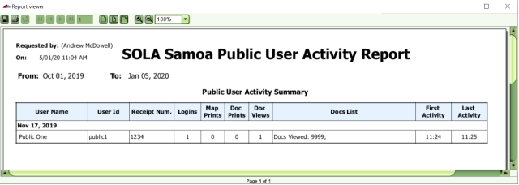

The Public User Activity Summary Report can be used to view Public User activity in SOLA. The report lists activity by each public user by day including the number of logins, the number of map prints, document prints, and documents viewed during the public user's session. The time of the fist activity by the user and last activity during that day are also listed as well as a list of the documents viewed and printed.
This report can be used by the Public Counter Staff to check whether additional printing fees should be charged to the Public User, but it should not be used to calculate those additional fees. SOLA cannot determine every instance of when a document is printed, and the Doc Prints column should not be relied on as the definitive number of documents printed. Users have the option to print when viewing a document, however printing when viewing a document is not recorded as a Doc Print activity in SOLA. It is strongly recommended that any printing fees should be charged based on the number of pages handed over to the user by the Public User Counter.

Public User Activity Summary Report
Users that have been assigned the Public Activity Report security privilege can access the report using the Reports > Public User Activity Summary menu option in the SOLA Desktop main menu, then clicking View Report on the report parameters dialog. By default, the report will list all public user activity for the last 7 days. To view activity for another time period or filter the report so only details for a specific Public User are displayed, enter a time interval and/or public user id in the dialog before clicking View Report. Note that the earliest Activity From Date allowed is 1 Oct 2019.
Public User Summary Report Parameters